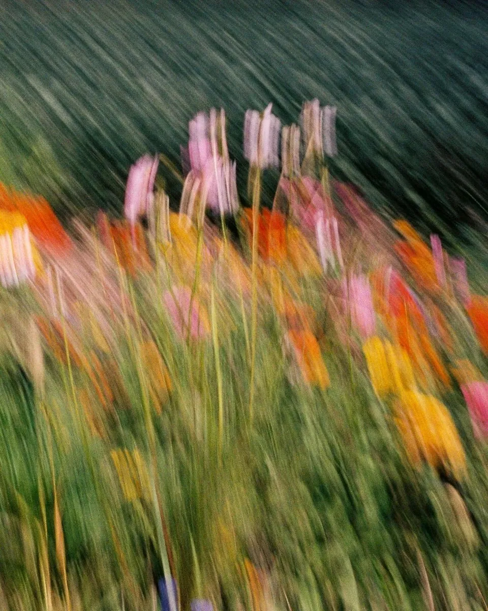
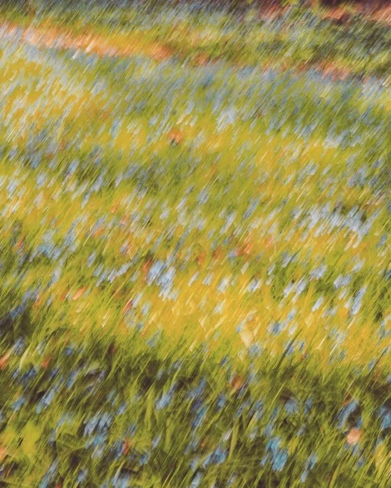
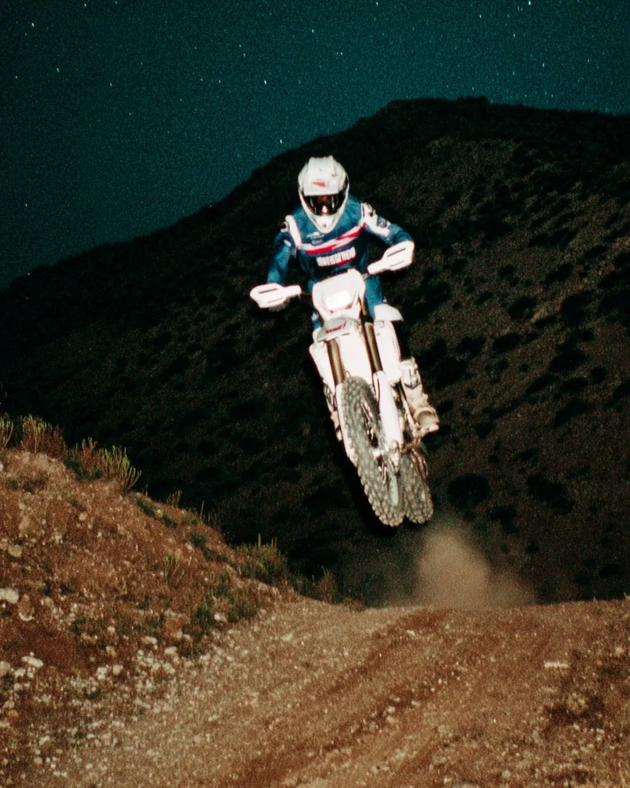

A single CSS file for typography, spacing, and layout.
Built from bridger.to and Craft. The rules for using it are written at the top of the file, so you can hand it to an AI agent and get pages that read well and feel consistent.
Why
Most of what makes a website feel considered is not its components. It is the type, the space between things, and where things sit on the page. This file handles that, plus one button and plain form fields, and leaves everything else to you.


Typography
Text uses the system's own sans serif: Helvetica Neue on Mac, Segoe UI on Windows, and Nimbus Sans or Liberation Sans on Linux. Nothing downloads, so the page never shifts while fonts load.
The type scale is small. Body text starts at 20px. A page title is 36px on 40px lines, section headings are 24px, and everything else is 20px. Below that, hierarchy comes from color, weight, order, and space, with a clear contrast between the page title and its supporting text.
There are no sizes to pick. Each heading level has its size, and line spacing follows the element: tight for single lines like names and labels, and more open for paragraphs and long-form writing.
Spacing
Every gap comes from one scale built on 4px, and each one is picked by context rather than by hand. Blocks on a page are 48px apart, increasing to 72px on larger screens. Items in a group are 12px apart, groups of groups 24px, and a label sits 8px above what it labels. In long-form writing, paragraphs are 16px apart and a heading gets four times more space above it than below, so it always groups with the text it introduces.
Layout
The page is a twelve-column canvas with 24px gutters. Everything starts at the first column. Text fills six columns, up to 660px wide. Images can stretch across eight columns, and motion or other visual work can use all twelve. Headings stay above the text.
Columns respond to the space they have, not to a choice. A grid is two equal columns, or one on a phone, and its columns keep the same width however many items it holds. Inside a content block, a grid divides its own twelve tracks into two equal groups of six. An aside uses four tracks for a label and eight for its content, so both land on page columns. Below 408px of available width, both layouts stack. On tablets, wide images stretch across ten columns; on phones, everything uses the full reading width.
Buttons and forms
There is one button: filled with the text color, 48px tall. Give each group one button for its main action and make the rest plain links beside it. Fields put their label 8px above a full-width input, and fields in a form sit 24px apart.

How to use it
Add the file to any page. There is nothing to install.
<link rel="stylesheet" href="ds.css">Keep text and wider media as siblings inside the page container:
<div class="ds-container">
<div class="ds-prose">Text</div>
<figure class="ds-wide">…</figure>
<div class="ds-full">…</div>
</div>To build with an agent, give it the file and ask it to follow the rules at the top. They spell out the page structure, which class to use for what, and what to avoid.
The colors are neutral grays, with light and dark modes that follow the system. To change one, or to give links an accent color, override its variable in :root:
:root {
--ds-primary: light-dark(#2563eb, #60a5fa);
}